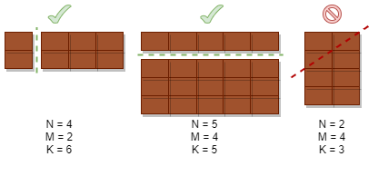

Imagine a chocolate bar. Remember how it is usually split into smaller bits by a special grid?
Now think of chocolate as an N x M rectangle divided into little segments: N segments in length and M in width. Each segment is 1x1 and unbreakable. Find out whether it is possible to break off exactly K segments from the chocolate with a single straight line: vertical or horizontal.
Input data format
The program gets an input of three integers: N, M, K.
Output data format
The program must output one of the two words: YES or NO.
If you're having trouble understanding the task, try drawing it on a piece of paper.

Sample Input 1:
4 2 6
Sample Output 1:
YES
Sample Input 2:
2 10 7
Sample Output 2:
NO
Sample Input 3:
7 4 21
Sample Output 3:
YES